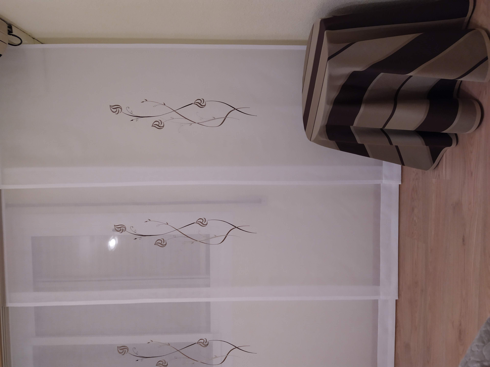
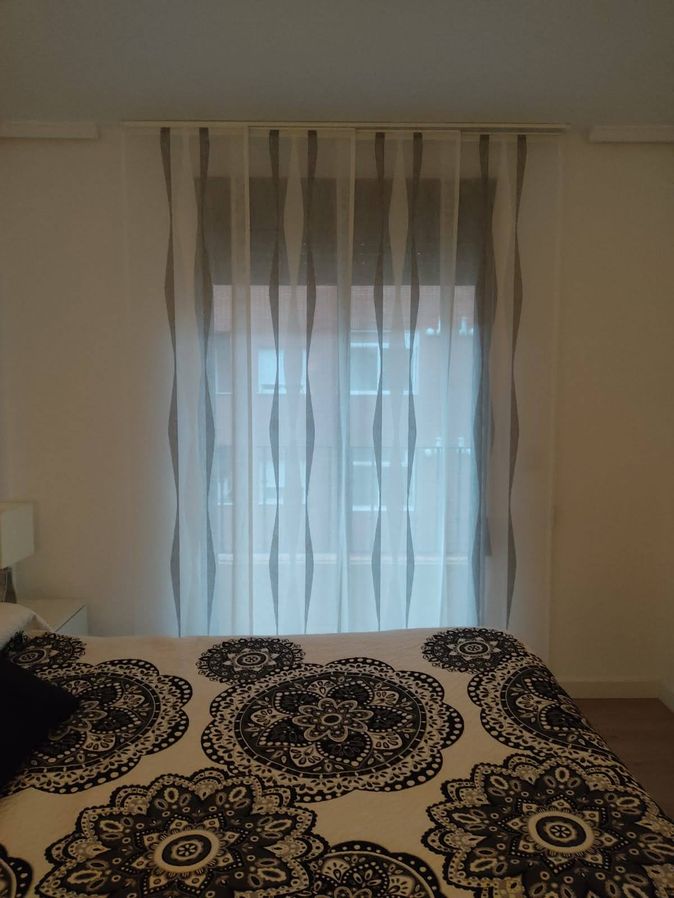

Paneles japoneses
Sistemas deslizantes minimalistas para grandes ventanales.
Que ofrecemos
Los paneles japoneses son perfectos para huecos grandes porque deslizan por vias y mantienen una linea visual ordenada. Tambien funcionan como separadores ligeros de ambiente.
Combinamos paneles traslucidos y opacos para graduar privacidad sin perder continuidad estetica.
Proceso de trabajo
Estudiamos ancho de hojas, sentido de apertura y numero de carriles para lograr un deslizamiento suave y una superposicion equilibrada de paneles.
Galeria de paneles japoneses



